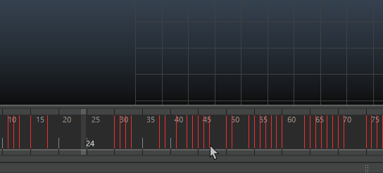

剪切关键帧本质上就是将关键帧复制到关键帧剪贴板，然后删除它们。
注：
- 如果在拖动选择关键帧时无意中包含了额外的关键帧，请使用“动画”(Animation)首选项（在“设置”(Settings)下）中的“最小关键帧选择大小”(Min key selection size)选项收缩可选区域。
- 将包含多个动画曲线的关键帧剪切和粘贴到多个属性时，请注意关键帧的选择顺序，因为该顺序将影响粘贴的顺序。
- 如果要从“曲线图编辑器”(Graph Editor)或“摄影表”(Dope Sheet)中的多个属性剪切关键帧，请从编辑器的大纲视图（而不是视图区域）中选择属性。

使用标记菜单在“时间滑块”(Time Slider)上剪切关键帧
剪切关键帧
- 若要选择关键帧，请执行以下操作之一：
- 若要选择单个关键帧，请按住 Shift 键并单击“时间滑块”(Time Slider)中的关键帧。
“当前时间指示器”(Current Time Indicator)将移动到单击的位置，相应的关键帧现已选中并以蓝色亮显。
- 若要选择多个关键帧，请按住 Shift 键并在“时间滑块”(Time Slider)中的关键帧范围上拖动。
该范围内的关键帧现已选中并以蓝色亮显。
- 若要选择单个关键帧，请按住 Shift 键并单击“时间滑块”(Time Slider)中的关键帧。
- 若要剪切关键帧，请执行以下操作：
- 单击鼠标右键并从显示的菜单中选择“剪切”(Cut)。
- 在“关键帧”(Key)菜单中选择“剪切”(Cut)。
如果启用“剪切关键帧”(Cut Keys)选项中的“时间范围”(Time Range) -“全部”(All)，当前对象的所有关键帧都将被剪切。如果启用“剪切关键帧”(Cut Key)选项中的“时间范围”(Time Range) -“开始/结束”(Start/End)，则只有指定“开始”(Start)和“结束”(End)时间之间的关键帧才会被剪切。如果启用“剪切关键帧”(Cut Keys)选项中的“时间范围”(Time Range) -“时间滑块”(Time Slider)，则只有范围滑块的“开始”(Start)和“结束”(End)时间之间的关键帧才会被剪切。
- 在视口中单击，然后按住 Shift + s 键以打开标记菜单。选择“关键帧 > 剪切关键帧”(Key > Cut Keys)。